Bravais symmetries in structural-lattice design
Ryan Latture, Frank Zok, Matthew Begley
Materials Seminar
Feb. 20th, 2015
Support provided by the Institute for Collaborative Biotechnologies through grant W911NF-09-0001 from the U.S. Army Research Office.
Developing materials for blast mitigation

Periodic vs. stochastic
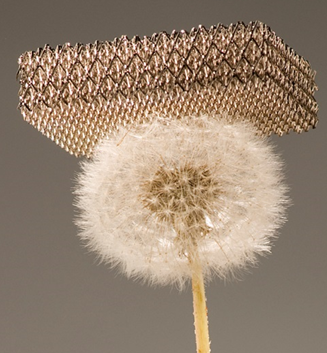
Microlattice
(Schaedler et al., 2011)
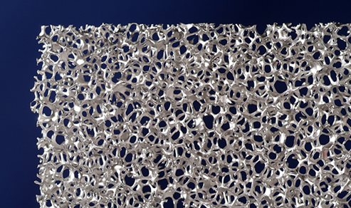
Metallic foam
(Roblar et al., 2008)
Stretch dominated structures offer potential for greater response
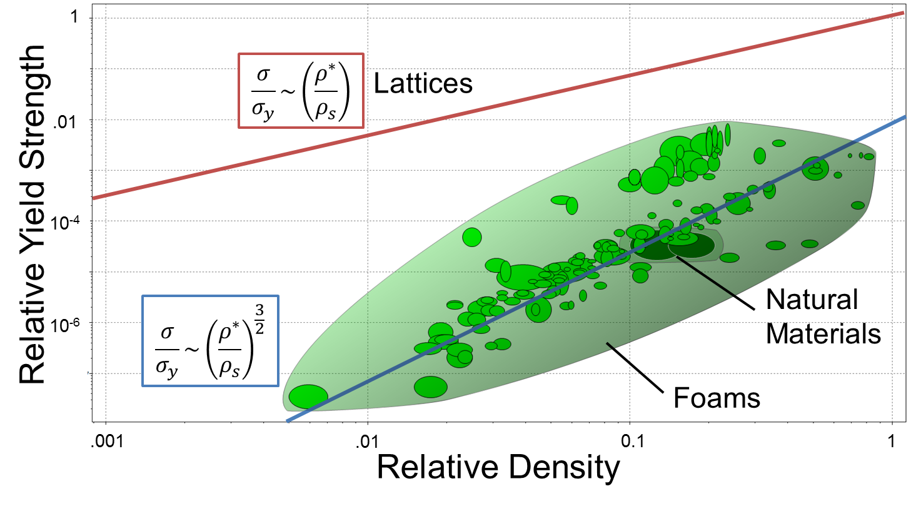Finite structures used in application
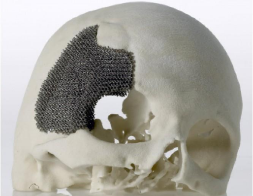
Cranial implant
(Arcam AB, 2013)
Cranial implant
(Arcam AB, 2013)
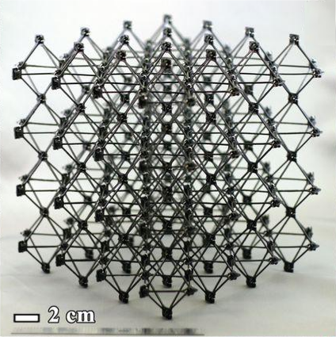
"Cuboct" lattice
(Cheung and Gershenfeld, 2013)
"Cuboct" lattice
(Cheung and Gershenfeld, 2013)
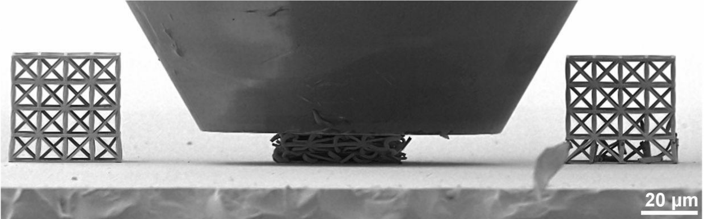
3D cellular ceramic
(Bauer et al., 2014)
3D cellular ceramic
(Bauer et al., 2014)
Leads to poor mechanical properties
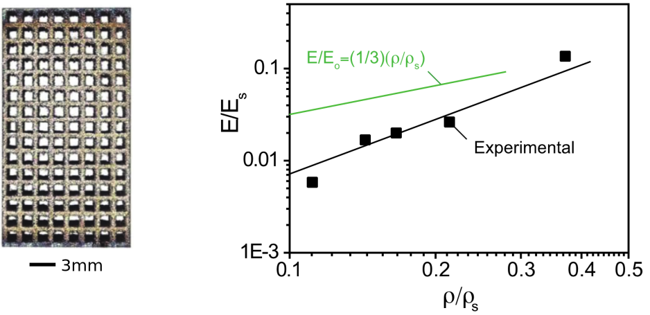(Zok, 2014. Adapted from Li et al., 2014)
Outline
- Develop a framework for assessing a structure in terms of Bravais lattice symmetries
- Comparison between Bravais lattice structures
- Conclusions & future work
Bravais lattice framework
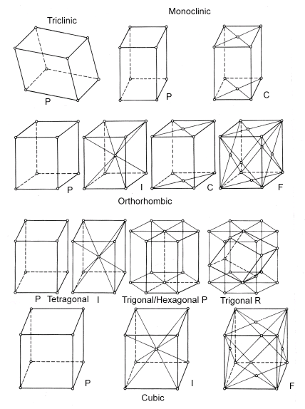Matrix entries previously mapped out
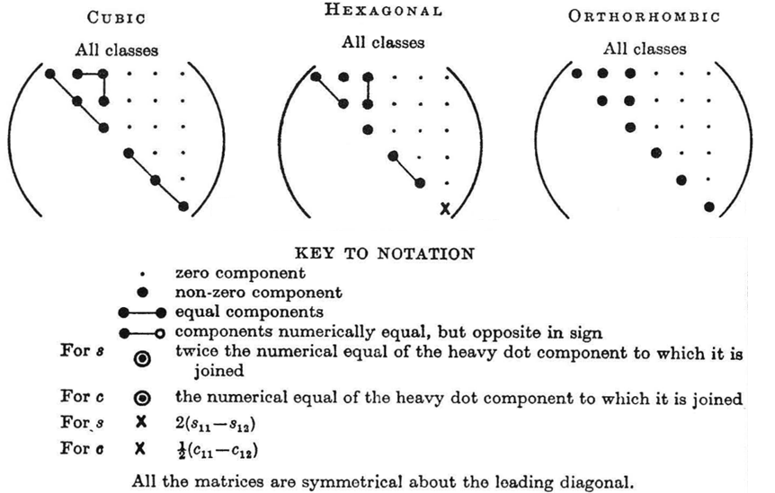Nye, J. F. Physical properties of crystals. Clarendon Press, 1964.
Finite lattices built from unit cells
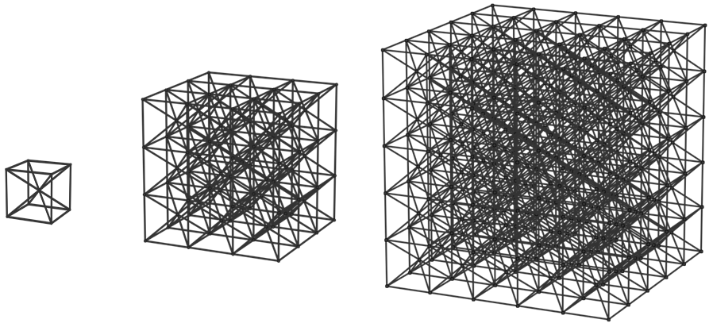
Elastic constants measured from axial loading
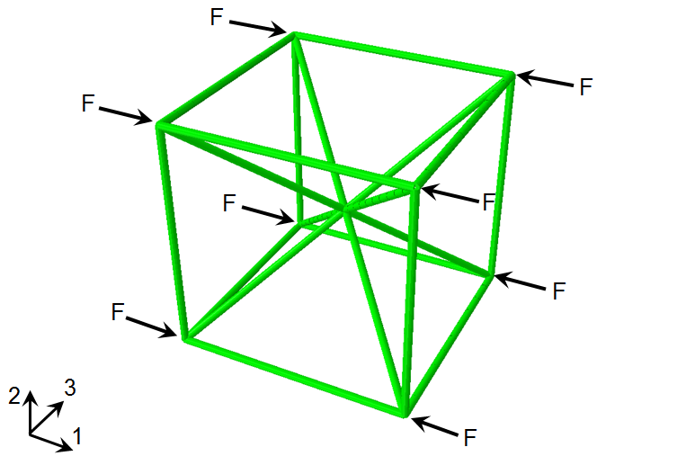Elastic constants measured from axial loading
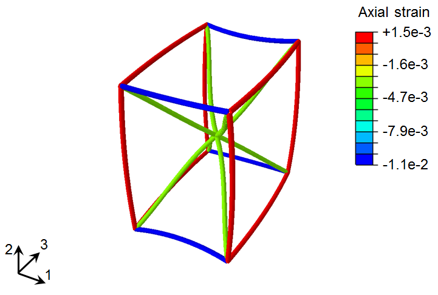Comparison between lattices
Young's modulus varies with structure
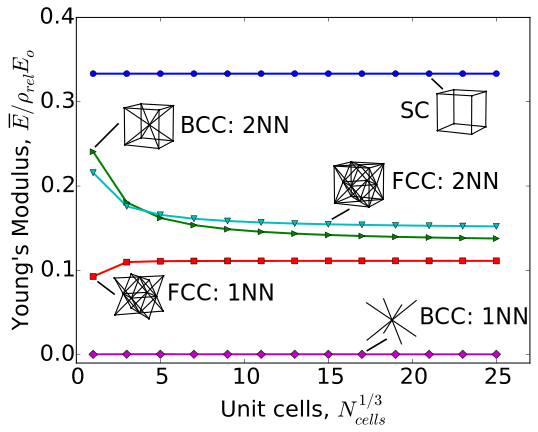Unit cell dictates Poisson ratio
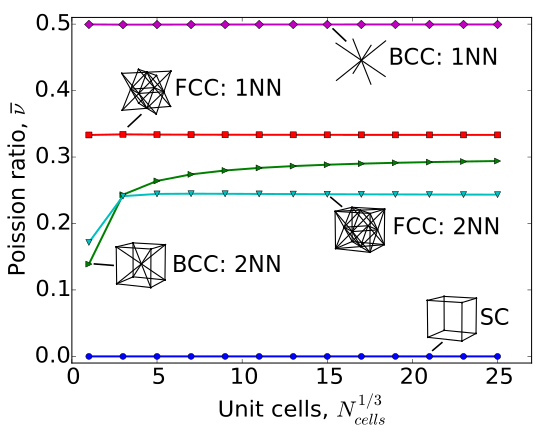Little variation in bulk modulus
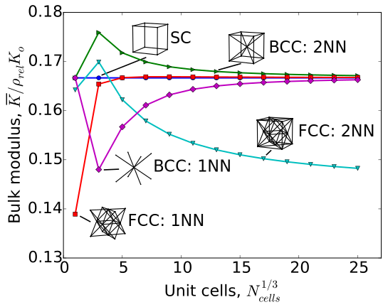Low shear modulus for SC
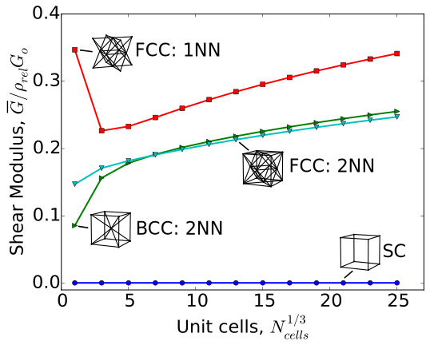What about strain
within the structure?
Conclusions & future work
- Structure size should be chosen based on stress requirements
- Choice of lattice affects strain uniformity
- Study additional lattices
- HCP, BCT
- Analyze defect sensitivity